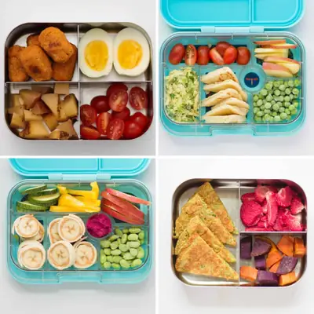

Cold Lunch Ideas

Ingredients
- 1 serving tortilla chips
- 1/4 cup protein (black beans, shredded chicken, ground beef)
- 2 tablespoons shredded cheese
- 1/2 cup vegetables (cherry tomatoes, bell peppers, carrots, lettuce, etc.)
- 2 tablespoons guacamole, salsa, or sour cream
- 1 small apple or fruit of choice
Steps
- Pack all the components in separate compartments of bento-style lunch box.
Recipe by Min Kwon · Kidfriendly Meals, from MJ and Hungryman. Saved here for personal use; the original has the full notes, tips and photos. Open original